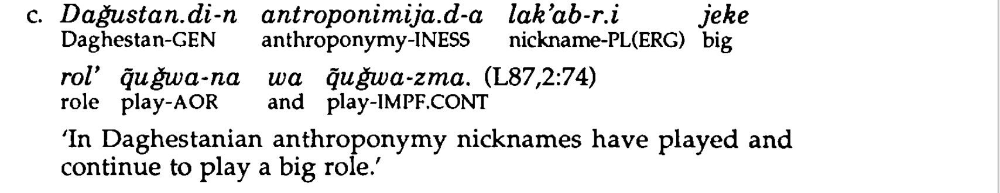

Continutives in Eurasia
1. Languages
All Eurasian languages included in the sample.
1.1. List
1.2. Map
2. Examples
Indo-European
Spanish (Butt, … Rodríguez 2019:446)

The continuative marker: todavía, aún.
Spanish (Butt, … Rodríguez 2019:457)

The continuative marker: continuar, seguir.


Nakh-Daghestanian
Lezgian (Haspelmath 1993:145)

The continuative marker: -zma/-nma.
Lezgian (Haspelmath 1993:210)

The continuative marker: hele.


3. Parameters
3.1. Morposyntactic status
3.2. Meaning in combination with negation
3.3. TAM restrictions
3.4. Expectation implicature
3.5. Adjacent meanings
3.6. Other uses
3.7. Diachronic sources
References
Akulov, A. 2005. An Aynu-Russian-English Dictionary. Kazan: Dobrotworskii.
Butt, J., C. Benjamin and A. M. Rodríguez. 2019. A New Reference Grammar of Modern Spanish. London, New York: Routledge.
Dej-Amorn, S. 2006. The Grammar of Green Hmong Particles. Mahidol University.
Dunn, M. J. 1999. A Grammar of Chukchi. Canberra: Australian National University.
Georg, S. 2007. A Descriptive Grammar of Ket (Yenisei-Ostyak): Part 1, Introduction, Phonology, Morphology. Folkestone, Kent: Global Oriental.
Göksel, A. and C. Kerslake. 2005. Turkish: A Comprehensive Grammar. London: Routledge.
Haspelmath, M. 1993. A Grammar of Lezgian. Berlin, New York: Walter de Gruyter.
Hewitt, G. B. 1995. Georgian: A Structural Reference Grammar. Amsterdam, Philadelphia: John Benjamins.
Iwasaki, S. and P. Ingkaphirom. 2005. A Reference Grammar of Thai. Cambridge: Cambridge University Press.
Kaiser, S., Y. Ichikawa, N. Kobayashi and H. Yamamoto. 2013. Japanese: A Comprehensive Grammar. London, New York: Routledge.
Karlsson, F. 1999. Finnish: An Essential Grammar. London: Routledge.
Klyagina, E. and A. Panova. 2019. ‘Phasal Polarity in Abaza’. HSE University. Series WP BRP Linguistics 89.
Kullmann, R. 1996. Mongolian Grammar. Hong Kong: Jensco.
Lehmann, T. 1993. A Grammar of Modern Tamil. Pondicherry, India: Pondicherry Institute of Linguistics; Culture.
Maslova, E. 2003. A Grammar of Kolyma Yukaghir. Berlin: Mouton de Gruyter.
Nedjalkov, I. 1997. Evenki. London, New York: Routledge.
Nedjalkov, V. P. and G. A. Otaina. 2013. A Syntax of the Nivkh Language: The Amur Dialect. Amsterdam, Philadelphia: John Benjamins.
Ross, C. and J.-h. S. Ma. 2017. Modern Mandarin Chinese Grammar: A Practical Guide. London: Routledge.
Sohn, H.-m. 1994. Korean. London: Routledge.